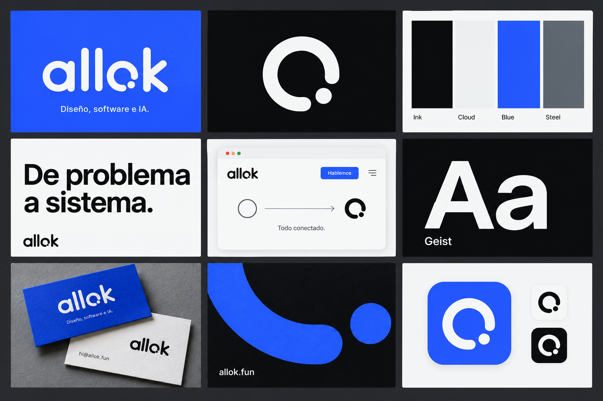
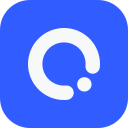

Una marca estable para un estudio que convierte problemas operativos en sistemas que funcionan.
Sistema de identidad
De problema
a sistema.
Diseño, software e IA para negocios que necesitan que todo hable entre sí.
El signo
Un círculo que
se cierra.
La o abierta es la conversación. El punto la completa. La marca permanece estable; el estado del servicio se muestra por separado.

White / Ink
App icon / BlueEl color
Una base
que aguanta.
#0B0D0ELa operación, el texto, la precisión.#F7F8F8El espacio donde el sistema respira.#315CFFLa marca en movimiento. Nunca un estado.#697278Contexto, soporte y calma.La voz visual
Geist, sin
ruido.
Una sola familia para que la idea y el detalle hablen el mismo idioma.
Todo conectado.
El texto es corto, concreto y útil. Habla de lo que cambia en el negocio, no de la tecnología por sí sola.
La voz
Decirlo
claro.
Concreto Di qué cambia en la operación y cuál es el siguiente paso.
Humano Tú, no jerga. La IA es parte del sistema, no el protagonista.
Honesto Enseña trabajo real. Nunca inventes resultados para completar una historia.
En uso
La marca
trabaja.
Una muestra de cómo se siente una superficie de producto. El estado está etiquetado como demostración.
Diseño + software + IA
Tu próximo sistema
Un espacio para conectar las conversaciones, el trabajo y la información de tu negocio.
Cuéntanos qué necesitas ↗Para construir